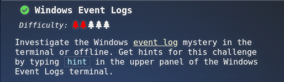
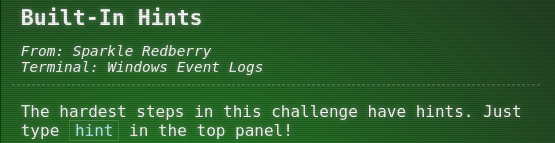
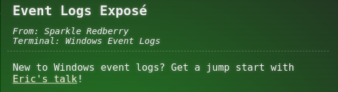
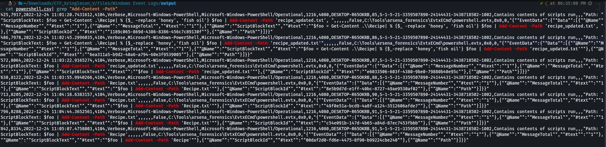
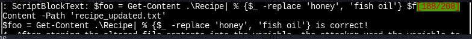
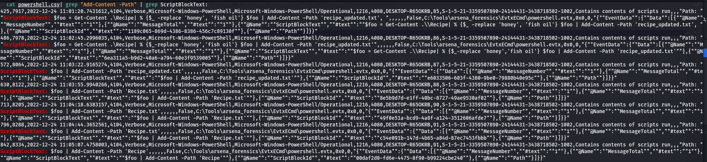
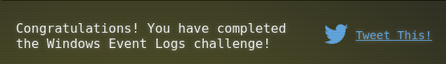

Recover the Tolkien Ring
1.3 Windows Event Logs

Investigate the Windows event log mystery in the terminal or offline. Get hints for this challenge by typing hint in the upper panel of the Windows Event Logs terminal.
Hint(s)


Solve
Download the Windows event log file: https://storage.googleapis.com/hhc22_player_assets/powershell.evtx
Terminal answers
Grinchum sucessfully download his keylogger and has gathered the admin credentials ! We think he used Powershell to find the Lembanh recipe and steal our secret ingredient. Luckily, we enabled Pwoershell audiing adn have exported the windows Powershell logs to a flat text file.
1.- What month/day/year did the attack take place ? for example 09/05/2021
HINT1: This is data that appers a lot into the log HINT2: Sort and unique are great commands HINT3: Find the dates that have the highest count.
ANSWER: 12/24/2022
Solve:
Use Forensic tool on Windows and se the correct date (in reverse-chronological order)
c:\> EvtxECmd.exe -f powershell.evtx --csv C:\Tools\arsena_forensics\EvtxECmd\output\powershell.csv
2.- An attacker got a secret from a file. What was the original files's name ?
HINT1: https://learn.microsoft.com/en-us/powershell/module/microsoft.powershell.management/add-content?view=powershell-7.3
ANSWER: recipe_updated.txt
Solve:
$ cat powershell.csv| grep "Add-Content -Path", se the file "recipe_updated.txt"
 3.- The contents of the previous file were retrieved, changed, and stored to a variable by the attacker. This was done multiple times. Submit the last full PowerShell line that performed only these actions.
HINT1: The desire line in the file will start with a $ snce the question specifies a PowerShell variable (ex- $var)). HINT2: To narrow your search look at https://learn.microsoft.com/en-us/powershell/module/microsoft.powershell.management/get-content?view=powershell-7.3 HINT3: Windows logs are in reverse-chronological order, try reversing their order with tac.
ANSWER: $foo = Get-Content .\Recipe| % {$_ -replace 'honey', 'fish oil'} $foo | Add-Content -Path 'recipe_updated.txt'
Solve: Keep looking the cvs file log the line should without ScriptBlock

4.- After storing the altered file contents info the variable, the attacker used the variable to run separated command that wrote the modified data to a file. This was done multiple times. Submit the last full Powershell line that performed only this actions
HINT1: Loog the lines that start with $foo HINT2: Windows logs are in reverse-chronological order, try reversing their order with tac. HINT3: Read the question careful, and try grepping for the answer of question 2
ANSWER: $foo | Add-Content -Path 'Recipe'
Solve:
Filter using grep and observe the reverse-chronological order
$ cat powershell.csv| grep "Add-Content -Path" | grep ScriptBlockText:

5.- The attack ran the previous command against a file multiple times , What is the name of this file?
ANSWER: Recipe.txt
Solve:
Filter using grep and observe the reverse-chronological order
$ cat powershell.csv| grep "Add-Content -Path" | grep ScriptBlockText:
6.- Where any files deleted ?
ANSWER: Yes
7.- Was the original file (from the question 2) deleted ?
ANSWER: No
8.- What is the Event ID of the log that shows the actual command line used to delete the file?
ANSWER: 4104
Solve:
Filter using grep and observe the first line 4104 is the envent requestedd
$ cat powershell.csv| grep "Add-Content -Path" | grep ScriptBlockText:
See the Line:
$foo = Get-Content .\Recipe| % {$_ -replace 'honey', 'fish oil'} $foo | Add-Content -Path 'recipe_updated.txt
EventID: 4104
9.- Is the secret ingredient compromised ?
ANSWER: Yes
10.- What is the secret ingredient ?
ANSWER: honey
Solve:
Filter using grep and observe the first line 4104 is the envent requested
$ cat powershell.csv| grep "Add-Content -Path" | grep ScriptBlockText:
See the line Line
$foo = Get-Content .\Recipe| % {$_ -replace 'honey', 'fish oil'} $foo | Add-Content -Path 'recipe_updated.txt'
